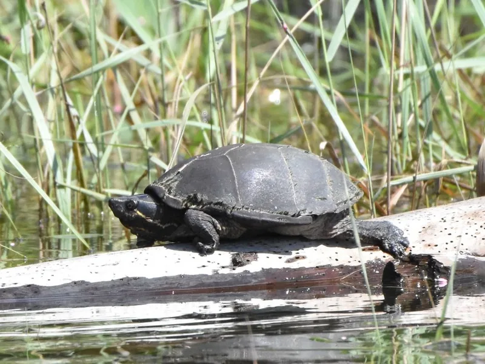

北米東部の浅い池や緩流に暮らす、最大14cmの小型水棲ガメ。30cm水槽から始められ、慣れると臭いもほとんど出さない——水棲ガメ入門の定番として長く愛されている種です。

1年後の甲長は6〜8cm程度。人の気配に慣れると、餌やり時に水面へ上がってくるようになる。泳ぐというよりゆっくり歩くような動きが特徴的で、コンパクトな水槽の中での生態観察が日課になる。
10年後でも甲長10〜13cm、重さ150〜300g程度が多い。30〜45cm水槽で飼い続けられるのが最大の利点。水換えの労力も小さいまま維持できる。成体になると餌への反応がよりはっきりする個体が多い。
コンパクトで管理しやすいように見えるが、小さな水槽に対して食べる量が多いため、水換えなしではフィルターだけで水質を保つのが難しい。週1〜2回の部分換水が安定飼育の鍵。また「ニオイガメ」という名前に過剰反応する前に、適切な水質管理で臭いが十分抑えられることを知っておくと安心。
ニオイガメはアメリカ東部・カナダ南部に広く分布します。浅い池・沼・緩流の河川を好み、水草が茂り底が泥や砂の環境に生息しています。水深は浅めを好み、首を伸ばせば水面に頭を出せる程度の水位にいることが多いです。
英名「Common Musk Turtle（ムスクガメ）」は、威嚇時に腹部の臭腺から分泌液を出す習性から来ています。ただし飼育下で慣れた個体はほとんど臭いを出さないため、「臭い」という名前は日常的な問題になりません。
野生での食性は動物食が中心で、水生昆虫・甲殻類・小魚・貝類・両生類などを食べています。植物性食品（藻類・水草）も摂りますが、動物性食品への嗜好が強い種です。
水棲ガメの飼育で最も重要なのは水質管理です。ニオイガメは小さな体の割に水を汚しやすいため、フィルター選びを最優先に考えます。
カメ専用人工フード（カメプロス・レプトミンなど）を主食にできます。動物食の強い種なので、冷凍赤虫・乾燥エビ・コオロギなどを補助的に与えると拒食になりにくいです。
給餌頻度はベビーは毎日少量、成体は2〜3日に1回が目安です。食べ残しは水質悪化の原因になるため、10分以内に食べ切れる量だけ与えます。
ほかの水棲ガメも見てみたい方、自分に合う種を探している方は診断ツールへ。
🐢 あなたに合う亀を診断する（100種対応）ニオイガメは30cm水槽から飼育できる入門水棲ガメ。水質管理さえ整えれば長期飼育が可能です。